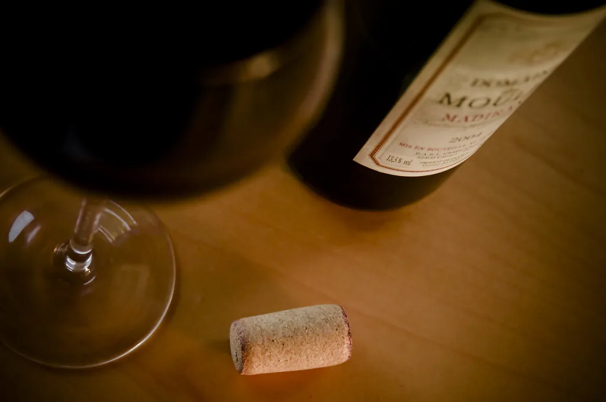
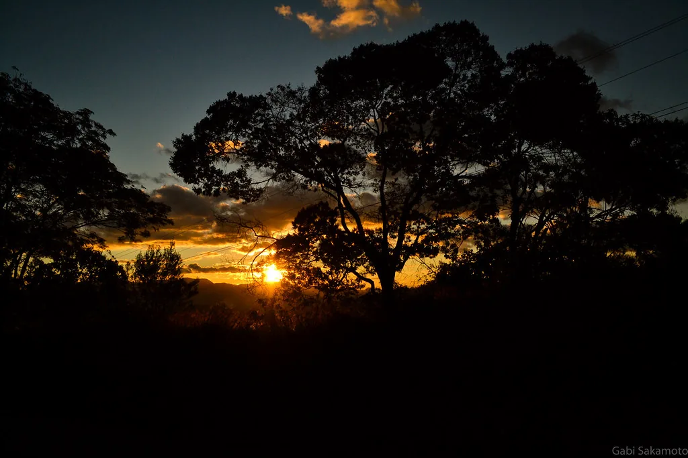

Santo Antônio do Pinhal
Armazém Di Vino
Wine, small plates and local produce on the Boulevard Araucária

By the glass, from the hills and beyond
A wine list with labels from the Mantiqueira, the rest of Brazil and the world, poured by the glass so you can try something new.
The kitchen uses produce from small local makers, artisanal and seasonal: full meals or petiscos to share.

Tables outside, the serra in front
Outdoor tables look out over the hills of the Serra da Mantiqueira.
Opening hours
- Monday10:00 – 18:00
- Tuesday10:00 – 22:00
- Wednesday10:00 – 18:00
- Thursday10:00 – 22:00
- Friday10:00 – 22:00
- Saturday10:00 – 22:00
- Sunday10:00 – 18:00
Hours to be confirmed by the shop.
Reserve a table outside
WhatsApp opens with your request ready to send.
Av. Ministro Nelson Hungria 533, shops 9 and 10, Centro, Santo Antônio do Pinhal (SP).
Get directions